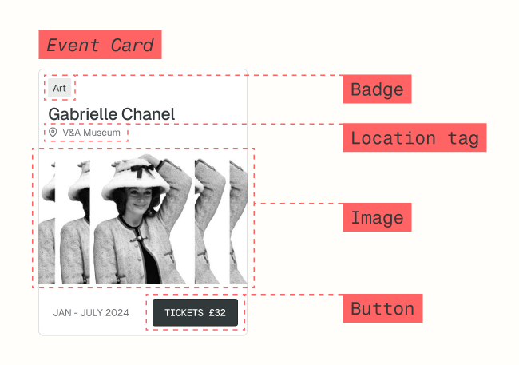
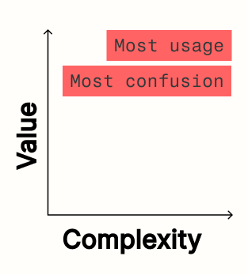

0/1
In my work at Societe Generale we're currently working on a complete rebuild of the Design System for V6. Here, I'll talk about the process and strategy of a clean build, and what my process would be to go from 0 to 1.
Design systems by nature are bespoke, created to reflect the company and ultimately reduce time to market and ensure experience consistency. I also think they are well placed to launch AI initiatives such as generating code and ensuring AI feature consistency.
The first metrics I'd target are simple: adoption, reuse and efficiency/productivity. I'd want to raise adoption as fast as possible, streamline decision making for designers and developers (without restricting them too much), before utilising the system to spread consistency for users.
-
30: Establish
- Review and audit existing work
- Identify stakeholders & teams
- Baseline build metrics
- Prioritise initial components
-
60: Build
- Fast release and initial adoption
- Community building
- Pilot schemes
-
90: Scale
- Initial feedback surveys
- Focus on quality and consistency
- Consumer satisfaction
- Governance & sustainability
Process
An audit is the natural starting point for a new system. For the v6 rebuild I started with a full audit of the most major products followed by interviews and workshops with designers and developers. The aim of these workshops is to collect components and code snippets, design knowledge from the existing team and design patterns to reuse.
Prioritising on a simple value/complexity chart, aiming for the components which would bring the most value up front (usually the most used or the most business critical), is a valuable exercise to do next.
Primitives can then be established in core style libraries. In other contexts I'd want to run a tech study to see what would be the best setup for developers to build with. Depending on the complexity of the platform/theming setup, I'd choose various design token/styling approaches before likely leveraging open source libraries for specific parts. This is also the stage where accessibility will be built in from the ground up.
After components are built/adapted, training and advocacy then becomes essential while we onboard people to the system as early as possible (from the first reusable component).


Build
Everyone has favourite tech stacks, but I'd want to ensure that the correct one was selected to best service the products and the people building those products.
That said I do have some favourites, and for web I'm currently loving a setup with BaseUI and CSS Modules. Great for accessibility and modular styling.
As to Figma library, component build would be more straightforward and I'd aim to match what's in code, before creating robust reusable assets using the full power of Figma's features.
Here's a demo of that setup in action, from a mini-design system that I built recently for personal use.
AI
Any new design system should be built around and with AI. I'd want to target AI training material immediately, alongside designing actual AI experiences for the product too.
With an AI training set, powerful agents and skills could be built for multiple user profiles:
MIGRATE: a utility to help developers migrate to the latest design system components.
PROTOTYPE: a skill to quickly render single pages or components to help designers or business users create their ideas in basic code.
BUILD: a full app building skill for developers to utilise
LINT: smart linting, suggesting code changes based on experience patterns and regular code linting
ASK: a simple skill to simply query the design system documentation, to answer questions quickly
Tooling
Aside from AI, quick custom tooling can help significantly with adoption. One of my main tools (called Design lab in Societe Generale) is a fast prototype builder that allows you to write and update code almost instantly, using the design system's styling and components.
This sort of tooling is another aspect that I would bring with me, as part of a holistic design practice to help adoption and delivery speed.
Here's a demo of the sort of tool, using my own mini-design system.
Reflection
Design systems should focus on the consumer (user), not the maintainer (DS team). It's far too easy to focus on the build when we should really be connecting with the consumers, creating tools and assets to help adoption or even helping with migrations directly — all the while building a feedback loop to help evolve the system further.
Once adoption is well under way, and time savings from reusability can be measured, focus can move towards secondary goals like ensuring consistent user experiences across products and building a better catalogue of assets and guidelines for reusability beyond just components.
I will note that from my experience seeing both 0-1 builds and then into what we might call maintenance mode, often different team setups/personalities are required to go from the initial sprints to longer term, less exciting work.